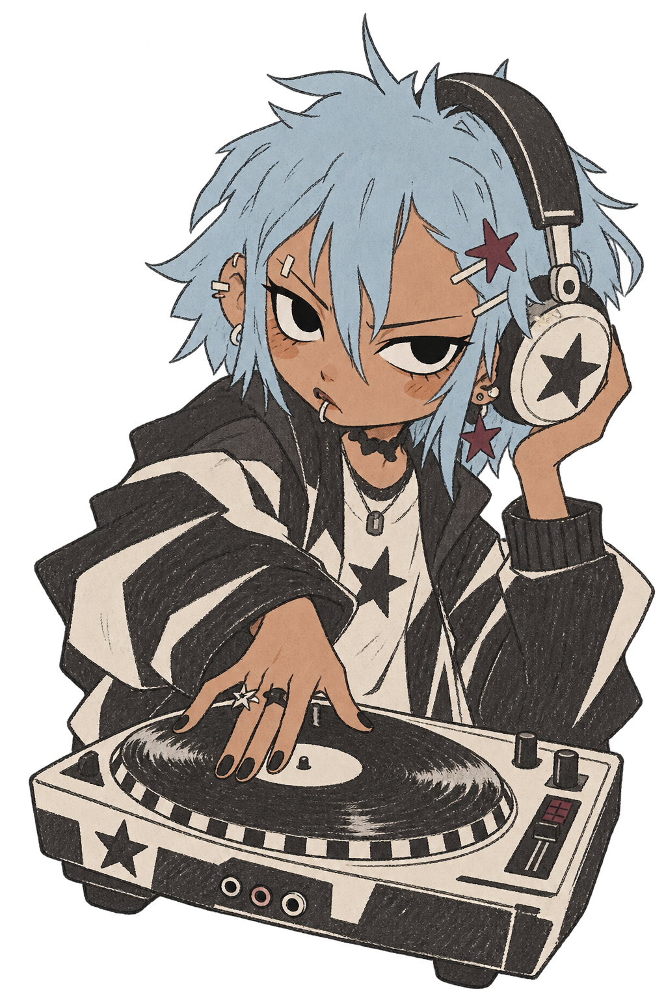

 本周声音档案 · 正在流动温柔控场派你喜欢让低频慢慢交接，动作不急，重心很稳。Deck A 仍是最熟悉的起点。 练习5 天时长2h 18m个人 MIX3 段 每周仅生成一次查看 AI 风格与学习方向AI
9.27 — 10.3这一周，声音留下了你五个练习夜晚、三段个人 Mix，拼成一张只属于你的本周封面。 最长一次42 分常用控制LOW起点偏好A 68% 由个人 Mix 与操作习惯生成打开本周 AI 画像AI
LIVE SOUND PROFILE你的操作正在改变水流热区越亮，说明你越常触碰。轨迹持续变化，不再是一张静态统计图。 DECK AEQ LOWMIXDECK B 本周练习5 天声音倾向稳定平均速度122 BPM 水流只是证据，结论单独展开查看 AI 分析与下一步AI